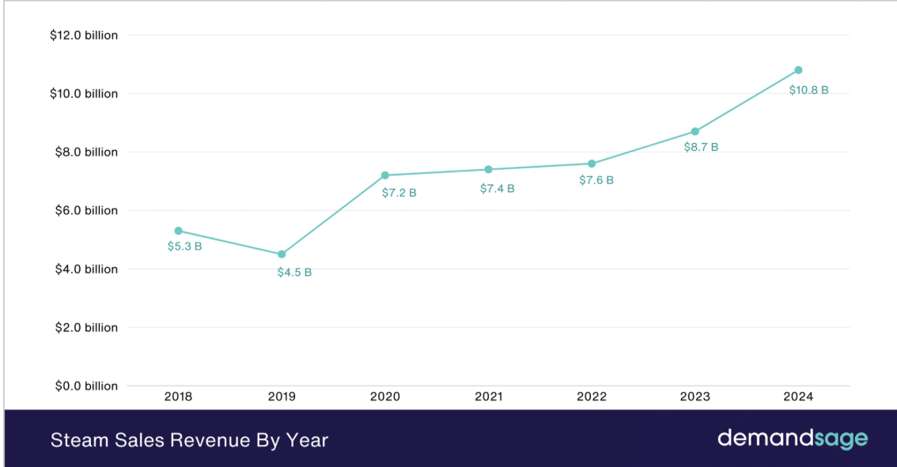

Epic Games Store
La Epic Games Store es una plataforma de distribución digital de videojuegos para PC (y recientemente en otras plataformas) lanzada en diciembre de 2018.
Algunos datos relevantes:
muchas otras tiendas: por ejemplo, en muchas transacciones EGS se queda con un
~12% y el desarrollador recibe ~88%.
100% de los primeros US$ 1 millón en ingresos netos por título al año, luego aplica el
reparto habitual.
crecimiento de usuarios, aunque no necesariamente al ingreso directo.
Ingresos aproximados de la tienda
A continuación, una gráfica estimada con los ingresos anuales que los jugadores han
gastado en la Epic Games Store (principalmente para PC) en los últimos años, según los
datos públicos disponibles:

Battle.net
La plataforma Battle.net es el servicio de distribución digital, lanzador de juegos y
comunidad online de Blizzard Entertainment.
- Permite a los usuarios comprar, lanzar y jugar a títulos como World of Warcraft,
Overwatch 2, Hearthstone, etc. - En un artículo se menciona que “las características de Battle.net ayudaron a que los ingresos de PC alcanzaran US$ 594 millones en el Q2 de 2023, correspondiendo al 27 % de los ingresos totales”.
- Está gestionado por Blizzard Entertainment, que es una división de Activision Blizzard.
Ingresos aproximados de la tienda
Basándonos en esos datos, podríamos estimar algo semejante a lo siguiente (muy aproximado)
para los juegos relacionados Blizzard:

GameStop(GME)
Es una cadena de videojuegos norteamericana, en la que se caracteriza por:
- Vender videojuegos, consolas, ascesorios, productos electrónicos de consumo y artículos de colección.
- Se hizo famosa a nivel mundial por el fenómeno de las acciones meme 2021.
- Tener presencia tanto online como física.
- Tienen una expansión global y ofrece servicios adiccionales relacionados con la electrónica.
Ingresos aproximados de la tienda:
Los ingresos de GameStop han estado disminuyendo significativamente desde su pico lo que refleja la presión de mercado, tanto en ventas digitales como físicas.A pesar de la caida de ingresos, repotaron un beneficio neto modesto para 2023 (~$6.7 millones), lo cual indica que han hecho esfuerzos de contención de costes.
La caída mas fuerte se ve entre 2024 y 2025, es una señal clara del desafío al que se enfrenta el modelo tradicional de retail de videojuegos.
En el siguiente diagrama se puede observar los picos y caidas que ha tenido a lo largo de estos años:

Steam
Es una tienda privada, la cual sus características son:
- Catálogo gigante con la mayor cantidad de juegos para PC del mundo.
- Ofertas frecuentes en cada estación del año, en miles de títulos.
- Permite el acceso anticipado, por lo que permite a los usuarios comprar y jugar versiones en desarrollo.
- Compatibilidad multiplataforma (Windows, macOS, Linux)
- Red social integrada pudiendo chatear desde la misma plataforma.
Ingresos aproximados de la tienda.
Al ser una empresa privada, no suele publicar sus resultados financieros de forma regular como lo hacen las compañías que cotizan en bolsa. Sin embargo, existen estimaciones sólidas de la industria.
